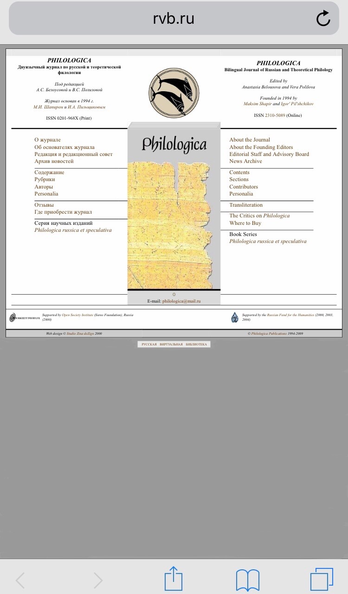

Мое портфолио
Волкова Виктория Сергеевна
Место учебы: НИУ ВШЭ, Филологический факультет
Научные интересы и немного о себе: люблю иностранные языки и зарубежную литературу, увлекаюсь музыкой.
Как современные технологии могут помочь филологу?
Прежде всего хотелось бы отметить электронные книги, благодаря которым можно носить ссобой множество
как художественной, так и научной литературы. Еще в наше время существует множество электронных библитек, в которых можно найти редкие книжные
издания. Также есть огромное продвижение в текстологии. С помощью различных современных технологий и приложений стало проще производить подсчеты
в этой области.
Сайт: PHILOLOGICA. Двуязычный журнал по русской и теоретической филологии
Ссылка на сайт
На мой взгляд, в целом, сайт сделан неплохо, довольно приятный внешний вид. Сразу видны разделы, по которым удобно
ориентироваться и переходить. Однако, что касается этих разделов. Первое, что следует отметить - это то, в каком порядке они стоят.
Было бы удобнее для пользователя распределить их по алфавиту. Также недостаток в том, что отсутсвует окошко поиска по сайту.
